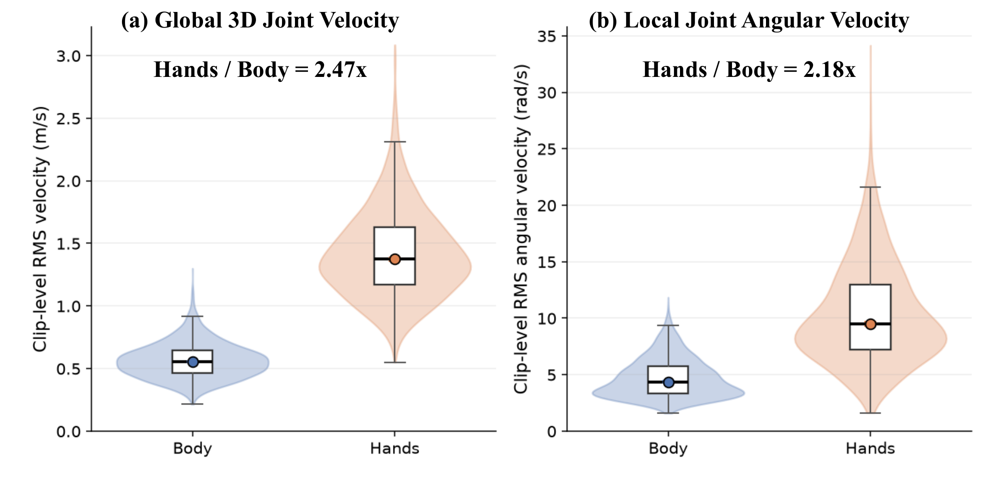
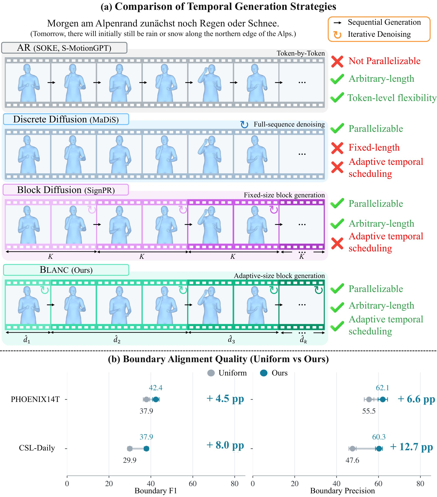
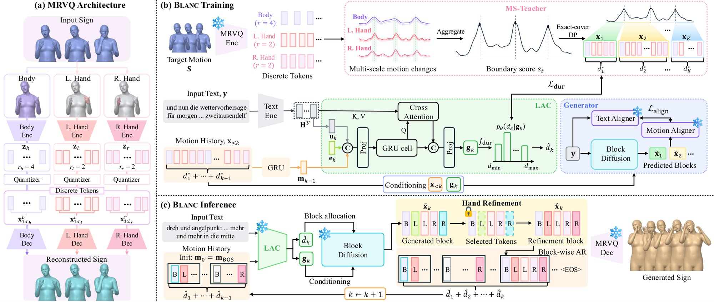
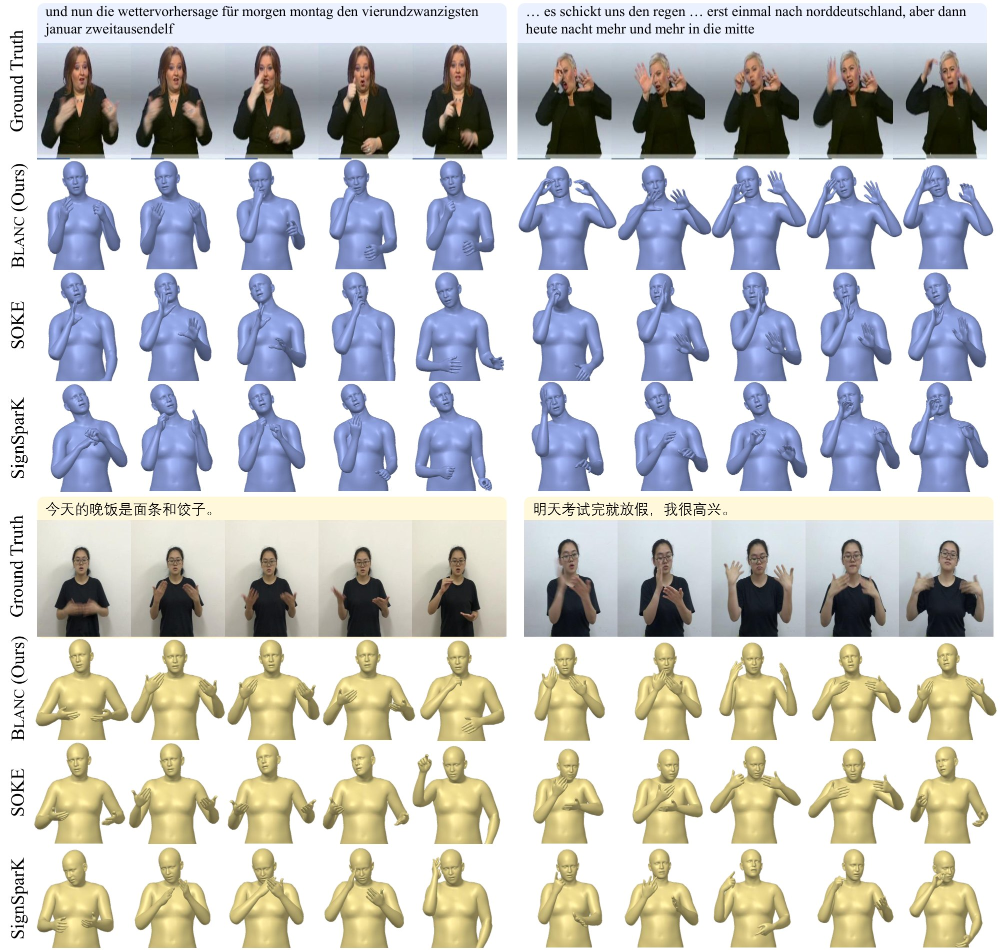
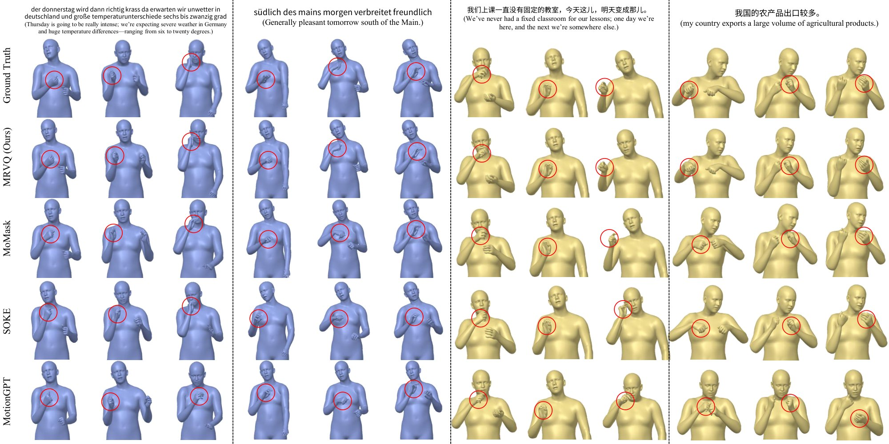

BLANC generates signing motion from text by tokenizing the body and both hands at different temporal rates (MRVQ) and generating motion in variable-duration blocks whose lengths are predicted by a Latent Articulatory Clock, learned without gloss annotations. It achieves state-of-the-art gloss-free SLP on PHOENIX-2014T and CSL-Daily.
Sign language production (SLP) aims to synthesize expressive signing motion from written text. Modeling signing motion presents two key temporal challenges. First, fine-grained hand articulations demand higher temporal resolution than relatively slower body movements. Second, signing events unfold over variable durations, calling for adaptive temporal scheduling during generation.
To address these challenges, we first introduce a Multi-Rate Vector Quantizer (MRVQ), an articulation-decoupled motion tokenizer that represents the body and both hands as separate discrete streams at distinct temporal resolutions. Building on this representation, we propose Blanc (BLock-wise Adaptive diffusioN with Articulatory Clock), a gloss-free SLP framework that generates variable-duration motion blocks causally while denoising tokens in parallel within each block. At its core, a Latent Articulatory Clock (LAC) learns temporal structure from multi-scale motion-derived partitions to predict block durations and sequence termination during generation. We further introduce inference-time body-conditioned hand refinement to improve coordination across articulators.
Extensive experiments on PHOENIX-2014T and CSL-Daily demonstrate that Blanc achieves state-of-the-art performance in sign language production.
Signing is realized through coordinated body and hand motion that evolves at different rates and over variable durations.
With a shared token rate, coarse tokenization discards hand detail, while fine tokenization inflates the token budget for every articulator.
Fixed-size blocks impose uniform generation intervals that can split coherent articulations or merge distinct motion phases.



Separate VQ-VAEs encode the body (stride 4) and each hand (stride 2) into discrete streams, so hands keep twice the temporal resolution of the body with a compact token budget.
Measures persistent changes in frozen MRVQ codebook embeddings across articulators and scales, then solves a bounded exact-cover DP to produce variable-length block targets. No gloss labels needed.
A causal controller that predicts the next block duration and sequence termination from remaining text semantics and generated motion history.
Remasks the most uncertain hand tokens in each block and re-predicts them with the same generator, keeping body tokens fixed as articulatory context.
| Method | PHOENIX-2014T | CSL-Daily | ||||||||||
|---|---|---|---|---|---|---|---|---|---|---|---|---|
| DTW-PA-JPE ↓ | DTW-JPE ↓ | Back-Translation ↑ | DTW-PA-JPE ↓ | DTW-JPE ↓ | Back-Translation ↑ | |||||||
| Body | Hand | Body | Hand | BLEU-4 | ROUGE-L | Body | Hand | Body | Hand | BLEU-4 | ROUGE-L | |
| T2M† | 36.54 | 3.63 | 35.69 | 24.12 | 0.31 | 5.95 | 28.83 | 3.58 | 30.97 | 18.63 | 0.00 | 10.80 |
| MotionGPT | 8.22 | 1.70 | 8.31 | 9.07 | 5.62 | 16.88 | 10.05 | 2.19 | 9.86 | 10.65 | 0.00 | 9.15 |
| MoMask | 8.20 | 1.58 | 7.91 | 7.69 | 6.44 | 19.81 | 10.58 | 2.15 | 10.51 | 9.61 | 0.57 | 15.89 |
| SOKE (no dict.) | 8.24 | 1.64 | 8.69 | 8.07 | 5.13 | 23.86 | 9.94 | 1.77 | 9.63 | 8.70 | 2.66 | 21.13 |
| SignPR† | 7.87 | 1.87 | 7.67 | 7.43 | 1.04 | 9.82 | 10.63 | 2.37 | 10.75 | 9.72 | 0.27 | 13.06 |
| SignSparK (no KF) | 8.35 | 1.81 | 8.32 | 7.96 | 1.21 | 10.08 | 9.83 | 2.16 | 9.17 | 8.78 | 0.32 | 12.82 |
| Blanc (w/o Refinement) | 7.57 | 1.49 | 7.31 | 7.01 | 9.58 | 24.83 | 9.67 | 1.71 | 9.48 | 8.19 | 1.86 | 18.52 |
| Blanc | 7.58 | 1.48 | 7.33 | 7.00 | 9.85 | 25.36 | 9.75 | 1.71 | 9.54 | 8.25 | 2.13 | 19.05 |
Bold: best · Underline: second best · † reproduced results.
| Block size | PHOENIX-2014T | CSL-Daily | ||||
|---|---|---|---|---|---|---|
| Body ↓ | Hand ↓ | BLEU-4 ↑ | Body ↓ | Hand ↓ | BLEU-4 ↑ | |
| L′ = 1 (AR) | 9.10 | 1.69 | 6.37 | 11.14 | 2.01 | 0.68 |
| L′ = 5 | 11.33 | 2.10 | 4.37 | 15.17 | 2.59 | 0.98 |
| L′ = 10 | 11.79 | 2.23 | 4.10 | 14.79 | 2.56 | 0.98 |
| L′ = 20 | 10.95 | 2.11 | 4.76 | 14.53 | 2.56 | 1.18 |
| Blanc | 7.58 | 1.48 | 9.85 | 9.75 | 1.71 | 2.13 |
Body and Hand report DTW-PA-JPE.
| Tokenizer | PHOENIX-2014T ↓ | CSL-Daily ↓ | ||
|---|---|---|---|---|
| Body | Hands | Body | Hands | |
| MotionGPT | 29.78 | 5.69 | 30.71 | 4.27 |
| MoMask | 23.65 | 5.27 | 25.07 | 4.12 |
| SOKE | 25.63 | 4.66 | 21.56 | 3.41 |
| MRVQ (Ours) | 15.48 | 4.37 | 11.80 | 3.06 |
PA-MPJPE of reconstructed motion.


@article{kim2026blanc,
title = {BLANC: Adaptive Temporal Scheduling for Sign Language Production},
author = {Kim, Youngmin and Hwang, Seoyeong and Hong, Sujung and Hwang, Seong Jae},
journal = {arXiv preprint},
year = {2026}
}